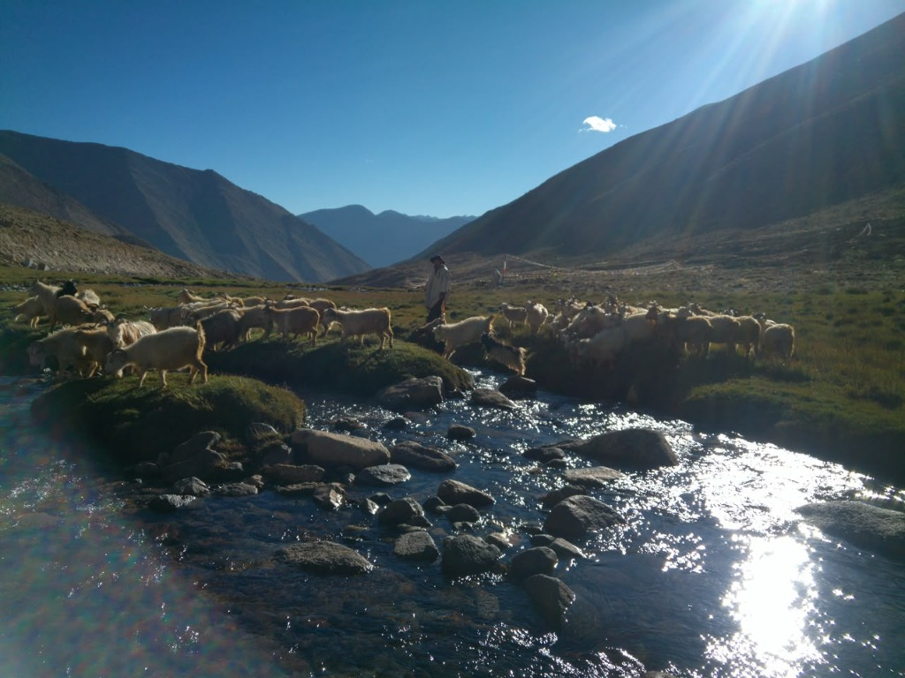
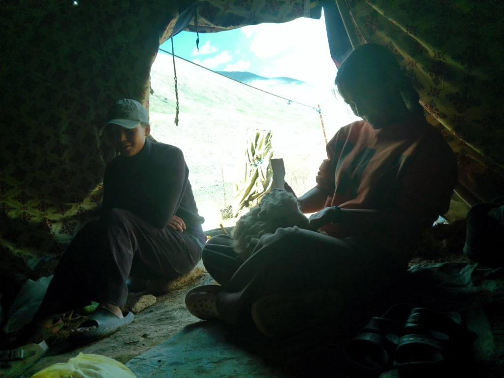
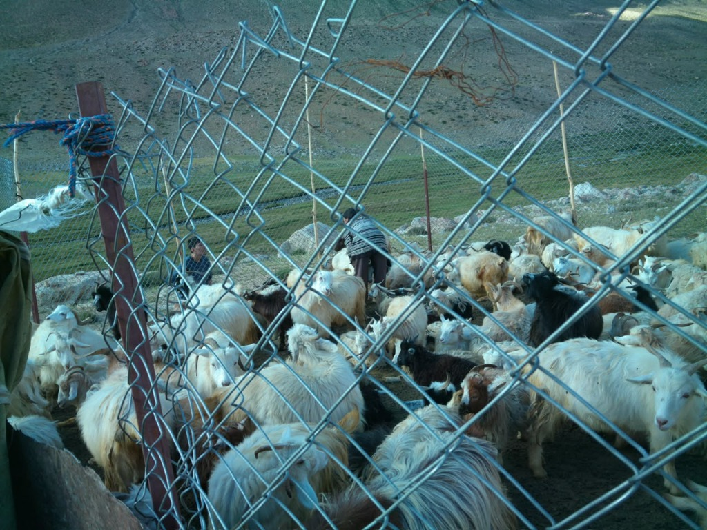
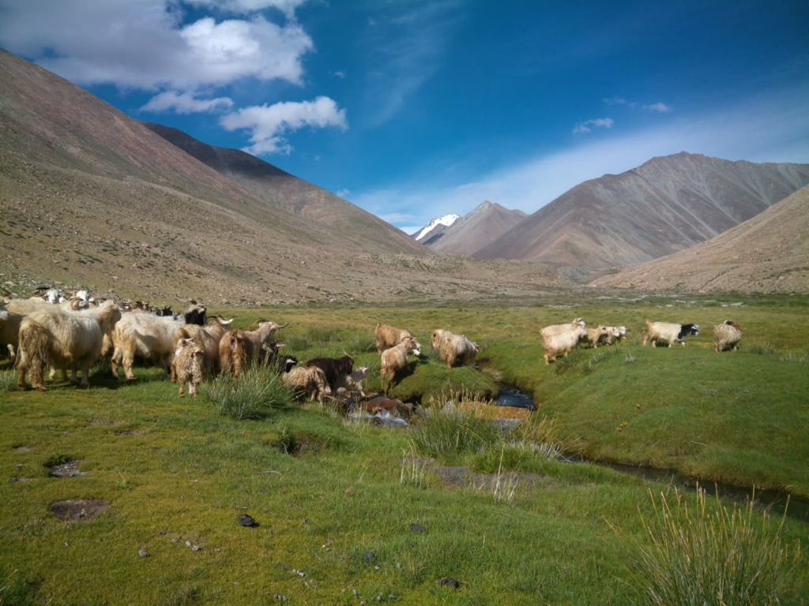
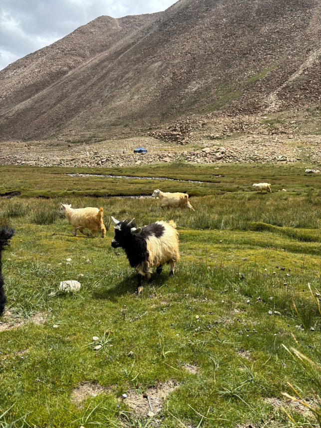
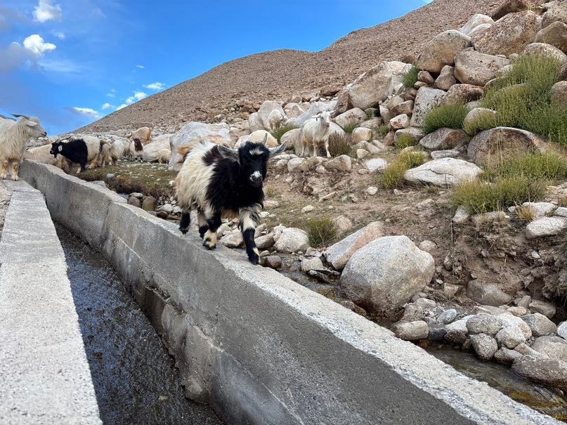
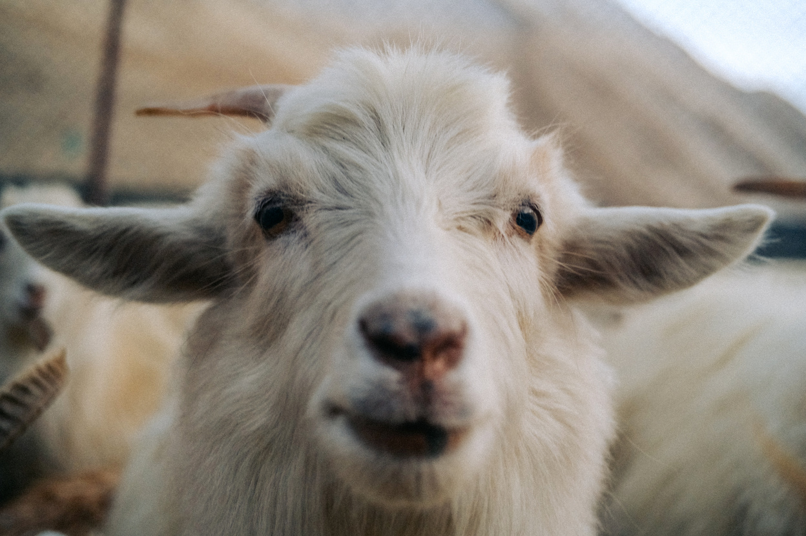

It’s been a little while since we last connected, and I’m sorry we couldn’t share updates sooner. Summer kept us quite busy, but we are happy to finally share a little glimpse of what has been happening at Kamchar.
This summer, we moved with our goats to our summer pastureland, and it was such a beautiful time for all of us. The goats truly enjoyed being there. With the open pastures and all that space to roam, it felt like a little paradise for them!
During this time, we also started our volunteering programme and welcomed two volunteers who spent time with us, took part in our everyday activities and experienced our way of life. We also began organising learning experiences for people to spend time with the animals and understand the importance of kindness, compassion and care towards them.
Through these experiences, we are slowly realising that Kamchar can become more than a home for our goats. It can also be a space where people reconnect with animals, understand our way of life and recognise how our traditional relationship with the land and animals contributes to the larger ecosystem.
We are still at the beginning of this journey, and your support has been a meaningful part of helping us take these first steps.
And of course, Mentok is doing really well! She is healthy and growing into a beautiful young girl. I’m sharing a few recent pictures so you can see how much she has grown.
Thank you so much for becoming her guardian and for being part of Kamchar’s journey. Your support means a lot to us, and most importantly, it helps us continue caring for the little lives who call Kamchar home.






